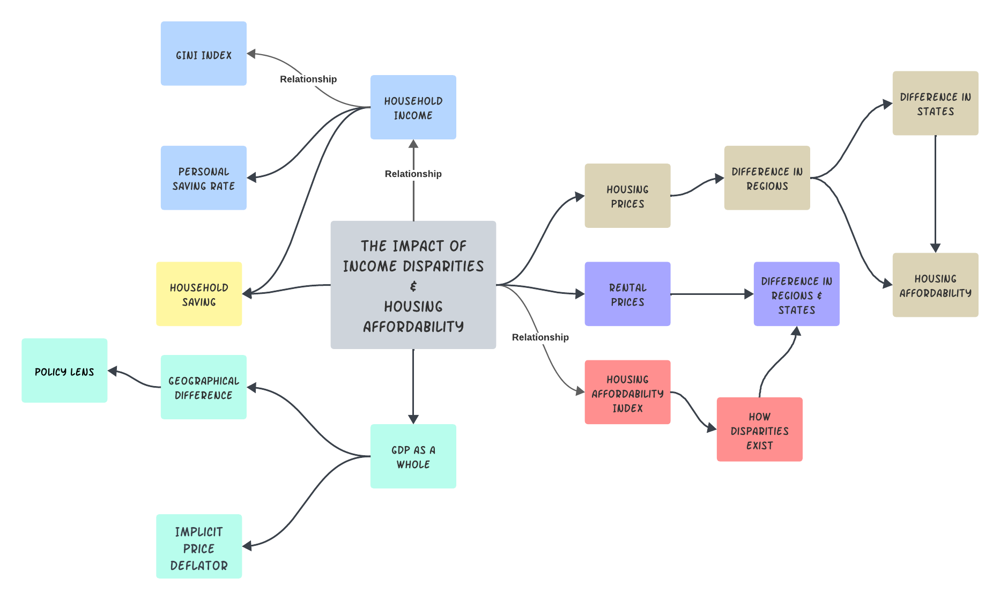

Conclusion
Big Picture Summary
Currently, we have witnessed the great development of the technology and society but we actually paid less attention to the economy and personal living status. Moreover, there are many interconnections to these factors as shown below. For instance, economy affects our GDP and makes the GDP deflators changing over the year. As GDP changes, the personal incomes are also affected. With the income changed, household saving and affordability are influenced as well. There are many concerning issues arised with these changes as well as the Covid-19 impacts. Therefore, my objective is to discover impacts, patterns, correlations among these factors and find insightful results by analyzing the impacts with and without Covid-19.

Throughout this journey, I have discovered and found many interesting results based on the analysis. The most interesting apsect is that I found that there are different relations among the factors such as incomes, savings, housing prices, and GDP. And some of these relations can be very concerning regarding our future. For instance, throughout the years, the housing prices including home values, sale prices, and rental prices have increased gradually even with Covid impacts. However, the median household income stayed roughly constant or grew extremely slowly. I think such phenomenon is concerning because this means it is more and more difficult for people to afford a house as also proved by GINI index.
Disparities (Income & Geographic)
We are towarding more inequality throughout the time. This means that the distribution of income within an economy deviates is not equal but the housing prices increase as always. Again, the Covid also had impacts of the general distribution of the incomes. In addition, the income disparities also impacted the individuals, making them less able to afford a house in the United States. With the historical trends in housing prices increasing, such disparities will only grow larger.
There is another crucial factor that can cause such phenomenon: Geographic. By looking at the housing price such as sale price across the states and areas (Data Visulization), difference places have different prices. To be more specific, we can see that Western and Eastern regions have overall higher housing prices. Respectively, the incomes and savings are also relatively higher than other regions. Which means that such disparities in prices for different places also have impacts on the incomes locally and further affecting the economic as a whole. In addition, the impact of the Covid-19 also plays a critical row in changing the incomes, prices, and even the whole economic. When Covid-19 happens arround 2022-02, there are sudden changes for many of the factors: Incomes, savings, housing prices, and so on. This also makes me wondering what would be the case if Covid-19 did not happen. The conclusion is actually clear: If Covid-19 did not happen, the outcomes will not be the same as shown in later sections.
Great Difference Before and After Covid-19
One crucial aspect that I found is that if Covid-19 did not happen, many factors will appear differently. For instance, for home values, if with Covid-19 happened, the prediction indictates that the values will decrease in the near future. However, if we excludes the Covid-19, pretending that it did not happen, then the prediction shows that the home value will increase as shown below.
Without COVID-19 or if COVID-19 did not happen, the GDP deflator will first decrease and then increase, which is exactly the same way as the sale price. However, the saving rate performs in the opposite direction. I actully think that this is reasonble because normally, a GDP deflator decrease means that the overall price level within the economy is falling. The sale prices can also contribute to the overall price level in the economy. As for saving rate going in the opposite way, I think it is because consumers might either save less because their purchasing power is reduced, or they might spend more before prices go up further, leading to a decrease in the saving rate. This could also have some impacts, with less saving rate, we have less opportunity putting the money in other things such as educations, medical resources, and other things that are even more important than housing.
Overall, I believe that we should start to addressing the issues where disparities continuously increasing not just in US but also globally. The economic as a whole somtimes can not give us a proper understanding. However, by going deeply into the factors where incomes and prices matter for each person, we can gain insights about the relations and the issues that we are facing currently. We should pay more attentions to the economy and personal living status with the development of the technology.
Future Work
As we can see, in order to fully understand the impacts among economics for incomes, house prices, many other external factors can also be included such as the environmental effects, different policies, resources allocations, traveling resources, and so on. Therefore, by adding more external datasets can also help me conduct more thorough analysis in the future.